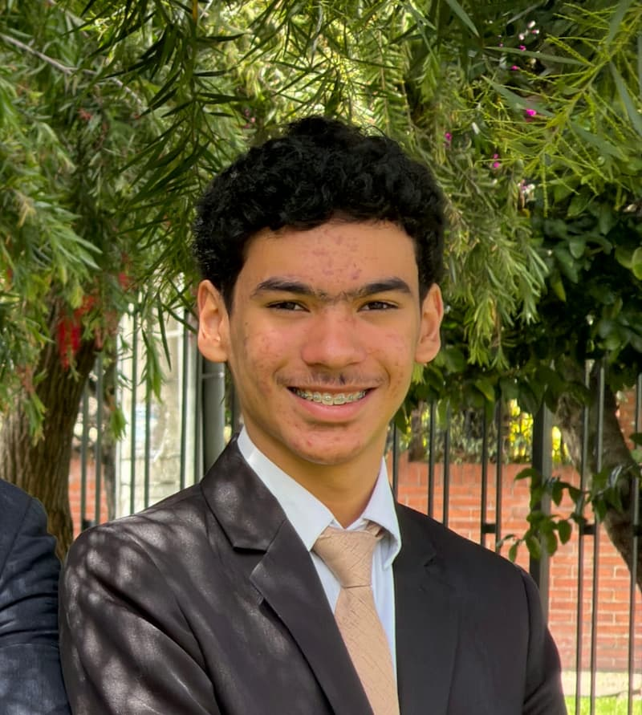

Jean Marco Carnevali
About Me
My name is Jean Marco Carnevali Rodriguez. I'm 17 years old. I'm from Caracas, Venezuela, and I'm living in Bogotá, Colombia with my family. I like anything related to technology and soccer. My goal is to earn a bachelor's degree in software development and go on a mission. I like to travel, go on outings with my family, i like spending time with them, and I really like to learn new things.

Bogotá, Colombia

Colombia is located in northwestern South America and is the only country on the continent with both Pacific and Caribbean coastlines. It is home to about 10% of the world's biodiversity, including the highest variety of bird and orchid species on Earth. The country is best known for its premium coffee, vibrant music, and emeralds.